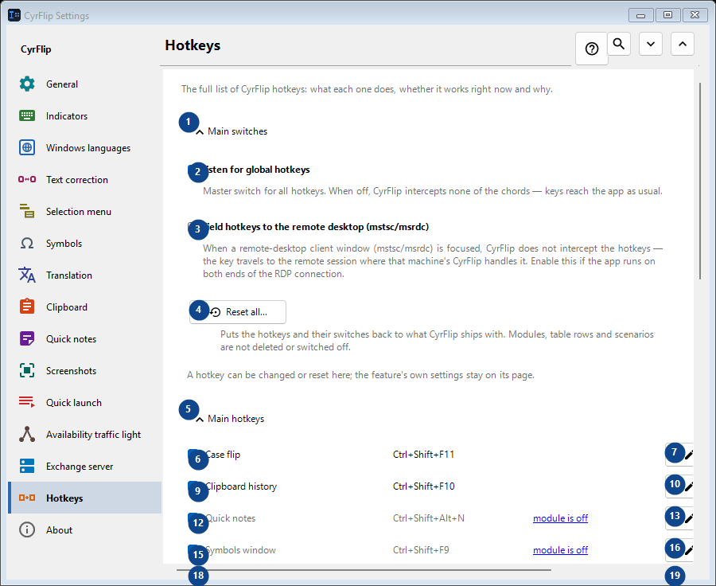
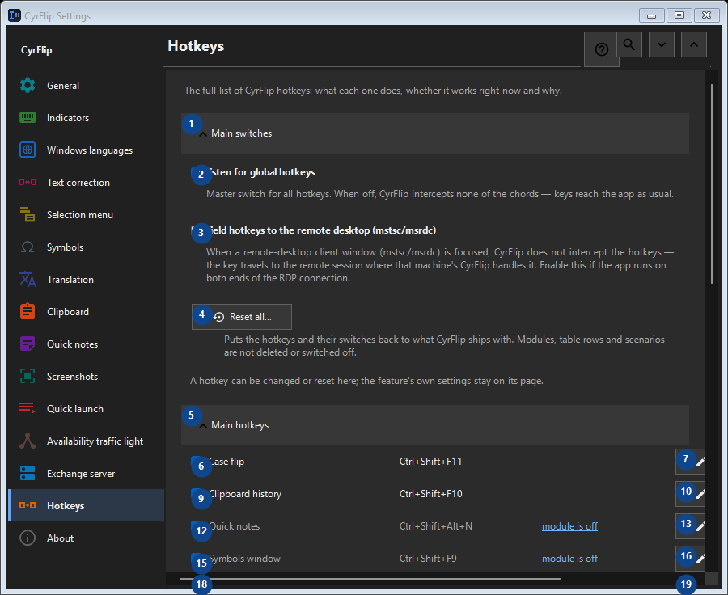

Hotkeys
What this is for
The full list of CyrFlip hotkeys: what each one does, whether it works right now and why.


In this order
Settings apply immediately. There is no required order; use the groups below.
The elements
1. Main switches
Use this command when you need the action named above. Review any confirmation before accepting it.
Your shortcuts2. Listen for global hotkeys
Master switch for all hotkeys. When off, CyrFlip intercepts none of the chords — keys reach the app as usual.
Your shortcuts3. Yield hotkeys to the remote desktop (mstsc/msrdc)
When a remote-desktop client window (mstsc/msrdc) is focused, CyrFlip does not intercept the hotkeys — the key travels to the remote session where that machine's CyrFlip handles it. Enable this if the app runs on both ends of the RDP connection.
Your shortcuts4. Reset all...
Puts the hotkeys and their switches back to what CyrFlip ships with. Modules, table rows and scenarios are not deleted or switched off.
Your shortcuts5. Main hotkeys
Use this command when you need the action named above. Review any confirmation before accepting it.
Your shortcuts6. Case flip Ctrl+Shift+F11
Use this command when you need the action named above. Review any confirmation before accepting it.
Your shortcuts7. Change... - Case flip Ctrl+Shift+F11
Use this command when you need the action named above. Review any confirmation before accepting it.
Your shortcuts8. Set default - Case flip Ctrl+Shift+F11
Use this command when you need the action named above. Review any confirmation before accepting it. This control is currently unavailable. Enable its feature or select an entry first.
Your shortcuts9. Clipboard history Ctrl+Shift+F10
Use this command when you need the action named above. Review any confirmation before accepting it.
Your shortcuts10. Change... - Clipboard history Ctrl+Shift+F10
Use this command when you need the action named above. Review any confirmation before accepting it.
Your shortcuts11. Set default - Clipboard history Ctrl+Shift+F10
Use this command when you need the action named above. Review any confirmation before accepting it. This control is currently unavailable. Enable its feature or select an entry first.
Your shortcuts12. Quick notes Ctrl+Shift+Alt+N
Use this command when you need the action named above. Review any confirmation before accepting it.
Your shortcuts13. Change... - Quick notes Ctrl+Shift+Alt+N
Use this command when you need the action named above. Review any confirmation before accepting it.
Your shortcuts14. Set default - Quick notes Ctrl+Shift+Alt+N
Use this command when you need the action named above. Review any confirmation before accepting it. This control is currently unavailable. Enable its feature or select an entry first.
Your shortcuts15. Symbols window Ctrl+Shift+F9
Use this command when you need the action named above. Review any confirmation before accepting it.
Your shortcuts16. Change... - Symbols window Ctrl+Shift+F9
Use this command when you need the action named above. Review any confirmation before accepting it.
Your shortcuts17. Set default - Symbols window Ctrl+Shift+F9
Use this command when you need the action named above. Review any confirmation before accepting it. This control is currently unavailable. Enable its feature or select an entry first.
Your shortcuts18. Availability traffic light Ctrl+Shift+Alt+T
Use this command when you need the action named above. Review any confirmation before accepting it.
Your shortcuts19. Change... - Availability traffic light Ctrl+Shift+Alt+T
Use this command when you need the action named above. Review any confirmation before accepting it.
Your shortcuts20. Set default - Availability traffic light Ctrl+Shift+Alt+T
Use this command when you need the action named above. Review any confirmation before accepting it. This control is currently unavailable. Enable its feature or select an entry first.
Your shortcuts21. Screen region capture Ctrl+F12
Use this command when you need the action named above. Review any confirmation before accepting it.
Your shortcuts22. Change... - Screen region capture Ctrl+F12
Use this command when you need the action named above. Review any confirmation before accepting it.
Your shortcuts23. Set default - Screen region capture Ctrl+F12
Use this command when you need the action named above. Review any confirmation before accepting it. This control is currently unavailable. Enable its feature or select an entry first.
Your shortcuts24. Full screen capture Ctrl+F11
Use this command when you need the action named above. Review any confirmation before accepting it.
Your shortcuts25. Change... - Full screen capture Ctrl+F11
Use this command when you need the action named above. Review any confirmation before accepting it.
Your shortcuts26. Set default - Full screen capture Ctrl+F11
Use this command when you need the action named above. Review any confirmation before accepting it. This control is currently unavailable. Enable its feature or select an entry first.
Your shortcuts27. Area capture with drawing Ctrl+Alt+F12
Use this command when you need the action named above. Review any confirmation before accepting it.
Your shortcuts28. Change... - Area capture with drawing Ctrl+Alt+F12
Use this command when you need the action named above. Review any confirmation before accepting it.
Your shortcuts29. Set default - Area capture with drawing Ctrl+Alt+F12
Use this command when you need the action named above. Review any confirmation before accepting it. This control is currently unavailable. Enable its feature or select an entry first.
Your shortcuts30. Full screen capture with drawing Ctrl+Alt+F11
Use this command when you need the action named above. Review any confirmation before accepting it.
Your shortcuts31. Change... - Full screen capture with drawing Ctrl+Alt+F11
Use this command when you need the action named above. Review any confirmation before accepting it.
Your shortcuts32. Set default - Full screen capture with drawing Ctrl+Alt+F11
Use this command when you need the action named above. Review any confirmation before accepting it. This control is currently unavailable. Enable its feature or select an entry first.
Your shortcuts33. Open the screenshots folder Ctrl+F10
Use this command when you need the action named above. Review any confirmation before accepting it.
Your shortcuts34. Change... - Open the screenshots folder Ctrl+F10
Use this command when you need the action named above. Review any confirmation before accepting it.
Your shortcuts35. Set default - Open the screenshots folder Ctrl+F10
Use this command when you need the action named above. Review any confirmation before accepting it. This control is currently unavailable. Enable its feature or select an entry first.
Your shortcuts36. Open the menu from the keyboard Ctrl+Shift+Alt+M
Use this command when you need the action named above. Review any confirmation before accepting it.
Your shortcuts37. Change... - Open the menu from the keyboard Ctrl+Shift+Alt+M
Use this command when you need the action named above. Review any confirmation before accepting it.
Your shortcuts38. Set default - Open the menu from the keyboard Ctrl+Shift+Alt+M
Use this command when you need the action named above. Review any confirmation before accepting it. This control is currently unavailable. Enable its feature or select an entry first.
Your shortcuts39. Send clipboard to server
Use this command when you need the action named above. Review any confirmation before accepting it.
Your shortcuts40. Change... - Send clipboard to server
Use this command when you need the action named above. Review any confirmation before accepting it.
Your shortcuts41. Set default - Send clipboard to server
Use this command when you need the action named above. Review any confirmation before accepting it. This control is currently unavailable. Enable its feature or select an entry first.
Your shortcuts42. Get clipboard from server
Use this command when you need the action named above. Review any confirmation before accepting it.
Your shortcuts43. Change... - Get clipboard from server
Use this command when you need the action named above. Review any confirmation before accepting it.
Your shortcuts44. Set default - Get clipboard from server
Use this command when you need the action named above. Review any confirmation before accepting it. This control is currently unavailable. Enable its feature or select an entry first.
Your shortcuts45. Mouse
Use this command when you need the action named above. Review any confirmation before accepting it.
Your shortcuts46. Change... - Menu over a selection Ctrl + right mouse button
Use this command when you need the action named above. Review any confirmation before accepting it.
Your shortcuts47. Set default - Menu over a selection Ctrl + right mouse button
Use this command when you need the action named above. Review any confirmation before accepting it. This control is currently unavailable. Enable its feature or select an entry first.
Your shortcuts48. Layout conversions
Use this command when you need the action named above. Review any confirmation before accepting it.
Your shortcuts49. Translation
Use this command when you need the action named above. Review any confirmation before accepting it.
Your shortcuts50. Quick launch
Use this command when you need the action named above. Review any confirmation before accepting it.
Your shortcuts51. Windows
Use this command when you need the action named above. Review any confirmation before accepting it.
Your shortcuts